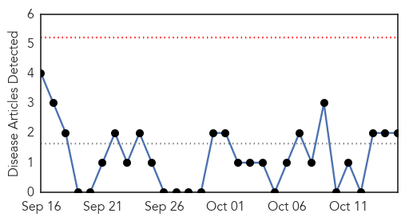
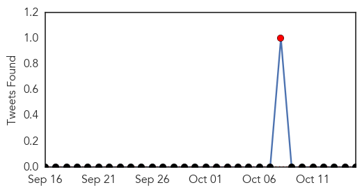
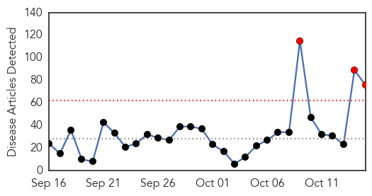
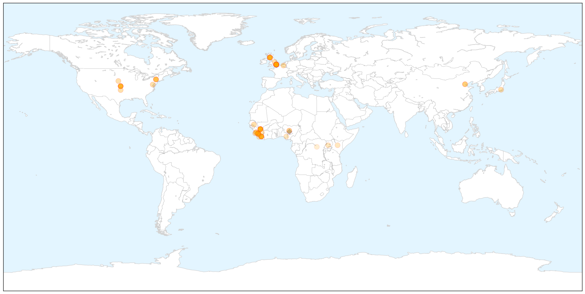

Pertussis
30-Day Web Trend
0 alerts, 0 warnings

30-Day Twitter Trend
1 alerts, 0 warnings

Article Locations


Article Confidences

Top Articles:
Top Tweets:
-
No tweets found for Oct 15, 2015
Ebola
30-Day Web Trend
3 alerts, 0 warnings

30-Day Twitter Trend
2 alerts, 0 warnings

Article Locations

X

Article Confidences

Top Articles:
- 1.000
- Ebola can survive in semen for months – CDC — RT USA
- 1.000
- Ebola persists in semen for up to nine months
- 1.000
- British nurse Pauline Cafferkey who had Ebola is critically ill
- 1.000
- Sexual transmission of Ebola virus in Liberia confirmed using genomic analysis
- 1.000
- Ebola Survivor From Scotland Is Critically Ill
- 1.000
- Ebola lingers in semen for months, studies confirm
- 1.000
- Scottish Nurse Who Had Ebola Is Back in Hospital and Critically Ill
- 1.000
- Neuro complications cited in UK nurse's Ebola case
- 1.000
- Male Survivors Can Carry Ebola for up to Nine Months
- 1.000
- The Return of Ebola? What You Need to Know
- 0.999
- Study: Ebola Virus Can Hide in Some Survivors for Longer Than Previously Thought
- 0.999
- Can Ebola Survive In Semen And Transmit Sexually?
- 0.999
- Scottish nurse now 'critically ill' after she recovered from Ebola
- 0.999
- Study: Ebola in male survivors can survive up to 9 months
- 0.999
- How does the Ebola virus spread? Fresh fears after critically ill British nurse diagnosed twice
- 0.999
- Ebola Infection More Stubborn than Believed, Reappearing in Sperm and Elsewhere
- 0.999
- Sexual Transmission of Ebola Virus in Liberia Confirmed Using Genomic Analysis
- 0.999
- Ebola-stricken nurse Pauline Cafferkey 'critically ill' after condition worsens
- 0.999
- Sexual transmission of Ebola virus in Liberia confirmed using genomic analysis
- 0.999
- Johnson & Johnson : Announces Start of Clinical Trial of Ebola Vaccine Regimen in Sierra Leone
- 0.999
- iafrica.com British Ebola nurse 'critically ill'
- 0.998
- Revealed! Ebola Can Live Up To Nine Months In Survivors
- 0.998
- British Ebola nurse now 'critically ill': Hospital
- 0.998
- Does 'reactivated' Ebola pose a threat?
- 0.998
- Infection control experts: U.S. isn't ready to handle an epidemic
- 0.998
- Study indicates Ebola may persist in semen for months
- 0.998
- Study indicates Ebola may persist in semen for months
- 0.998
- Scottish nurse in critical condition after rare case of Ebola relapse
- 0.997
- The lingering symptoms of Ebola survivors
- 0.997
- Ailing Ebola nurse in UK may be rare case of relapse
- 0.996
- Ebola Cured Nurse Now In Critical Condition
- 0.996
- UK Ebola relapse case takes virus specialists to uncharted waters
- 0.996
- Ebola lingers in semen for nine months
- 0.995
- Rapid decline of nurse 'cured' of Ebola staggers experts
- 0.995
- First ebola ‘EBOVAC-Salone’ vaccines given out in Sierra Leone
- 0.994
- Does 'Reactivated' Ebola Pose a Threat or Risk of Transmission?
- 0.994
- Addressing Ebola Waste Disposal Challenges for US Hospitals
- 0.994
- Evidence Confirms Ebola Persists in Semen for 6 Months
- 0.991
- UK's first Ebola patient relapses to critical condition -
- 0.987
- Ebola RNA Persistence in Semen of Ebola Virus Disease Survivors — Preliminary Report — NEJM
- 0.987
- William P.J. Lynch Jr.comWilliam P.J. Lynch Jr.com
- 0.986
- First Case of Sexually Transmitted Ebola Just Confirmed
- 0.983
- Ebola still lingers in semen for months, scientists find
- 0.981
- The First Case Of Sexually Transmitted Ebola Was Just Reported
- 0.980
- Ebola returns to ‘cured’ nurse
- 0.977
- More Ebola nurse close contacts identified
- 0.971
- Ebola Survivor Seriously Ill Due to Virus' Long- Term Effects : News : Realty Today
- 0.970
- Chinese company intends to build plant to produce Ebola vax
- 0.970
- British nurse suffering Ebola relapse critically ill
- 0.965
- UK Nurse With Relapsed Ebola 'Critically Ill'
Showing top 50 articles...
Top Tweets:
- 0.949
- Sexual transmission of Ebola virus in Liberia confirmed using genomic analysis - Medical Xpress http://t.co/faWfRwL5Ea ebola EVD
- 0.880
- Ebola RNA Persistence in Semen of Ebola Virus Disease Survivors — Preliminary Report sexualtransmission http://t.co/ir3a0obdH7
- 0.871
- WHO: Ebola virus found in male survivors 9 months after symptoms - CNN http://t.co/GR6LFOk55R ebola EVD
- 0.864
- Study: Most health workers infected in non-Ebola settings - CIDRAP http://t.co/LmPKyca4BP ebola EVD
- 0.856
- Ebola study finds women in Guinea who appear immune to the virus - The Guardian http://t.co/iXoxa0niSt ebola EVD
- 0.774
- Don't Panic: First Case of Sexually Transmitted Ebola Just Confirmed - From Quarks to Quasars http://t.co/4CYSYxIGzk ebola EVD
- 0.756
- Ebola virus can stick around up to 9 months in men - CBS News http://t.co/ehgga5Cpfa ebola EVD
- 0.743
- MSF President on Lessons from the Ebola Epidemic - BBC News http://t.co/OPpTn9Bmz5 ebola EVD
- 0.679
- Scottish Nurse Who Had Ebola Is Back in Hospital and Critically Ill - New York Times http://t.co/0QzqHvjGwE ebola EVD
- 0.659
- Scottish nurse who recovered from Ebola critically ill - USA TODAY http://t.co/tUqc7BoKQR ebola EVD
- 0.630
- Scottish nurse now 'critically ill' after she recovered from Ebola - PBS NewsHour http://t.co/h20Gn3DhbW ebola EVD
- 0.626
- WHO: Die Welt ist auf neue Epidemie wie bei Ebola nicht vorbereitet - DIE WELT http://t.co/fAm7RxqLTO ebola EVD
- 0.620
- No it is not true. There is no Ebola in Nigeria.
- 0.558
- Tracy Morgan: 'I'm now 100% Ebola-free!' - USA TODAY http://t.co/FN6DSfv2BM ebola EVD
- 0.542
- PUBLIC HEALTH - Rappler http://t.co/XvJpU2GV7U ebola EVD